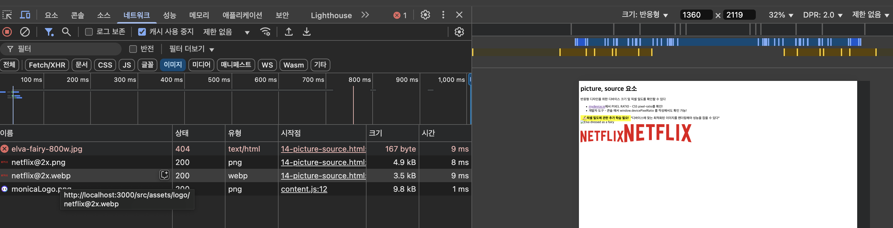

picture, source 요소
반응형 디자인을 위한 디바이스 크기 및 픽셀 밀도를 확인할 수 있다
mydevice.io
에서 PIXEL RATIO - CSS pixel-ratio를 확인!
개발자 도구 - 콘솔 에서 window.devicePixelRatio 를 작성해서도 확인 가능!
✍🏻 픽셀 밀도에 관한 추가 학습 필요!
*디바이스에 맞는 최적화된 이미지를 렌더링해야 성능을 잡을 수 있다*
